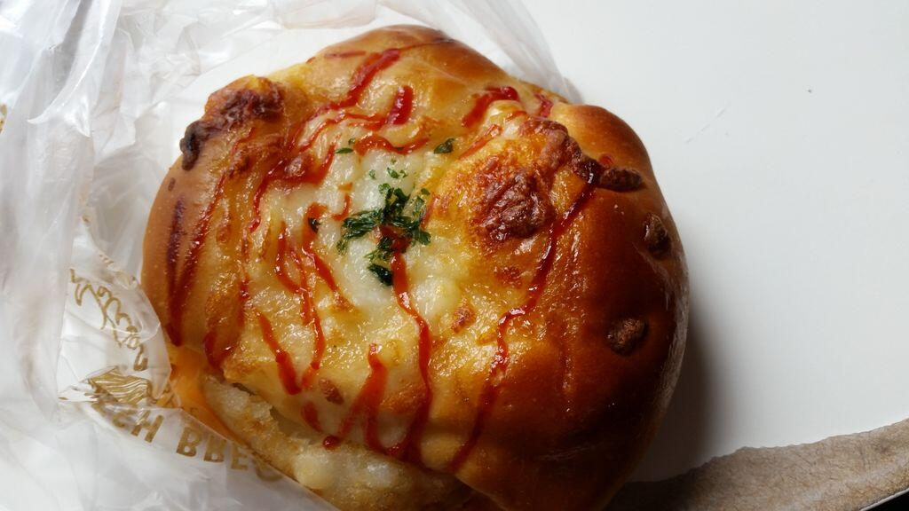

Odin Recipes
Hashbrown Bread

Easy Homemade Hashbrown Bread Inspired by Paris Baguette!
Ingredients
1 can Pillsbury crescent dough sheet
1 box frozen hashbrown patties
Squeeze bottle Ketchup
Squeeze bottle Mayonnaise: preferably Japanese Kewpie mayo
Uncured sliced deli ham
Sliced Cheese
Mozzarella Cheese
Dried parsley or fresh parsley for garnish
Instructions
- Assembly is super easy and quick, so preheat your oven or toaster oven to 375°F. Gather all of your ingredients and kitchen tools. Then, line a sheet pan that is at least 9″x13″ or larger with parchment paper or a silicone mat.
- Open and unroll the crescent dough sheet onto your work surface with the long side facing you. Try to shape it into an even rectangular shape the best you can, without pulling or stretching it too much. Next, cut the dough down the middle to create two even sections (perpendicular cut). Then, cut the dough into thirds across the length of the dough using a pizza cutter or knife (two horizontal cuts).
- Remove a section of the cut crescent dough and place the cheese in the middle of it. Tip: the cheese may have to be folded in half and should be approximately the width of the hashbrown. Top cheese with 4 pieces of thinly sliced ham or 1 large uncured ham slice, folded in half. Top the ham with the frozen hashbrown. To seal the hashbrown bread, bring the ends of the crescent dough around the fillings and pinch the ends to seal. Place the hashbrown bread with the seam side down onto the baking sheet. Repeat this for the remaining dough sections.
- Top with mayonnaise and ketchup in a zig-zag pattern across the top of the crescent dough. If your ketchup or mayo bottle has a squirt mishap, don’t worry (see bottom left bread). The hashbrown bread will still taste great! Note: triple top condiment squeeze bottles can be used too.
- The mozzarella topping can be added in several ways and garnish with parsley!